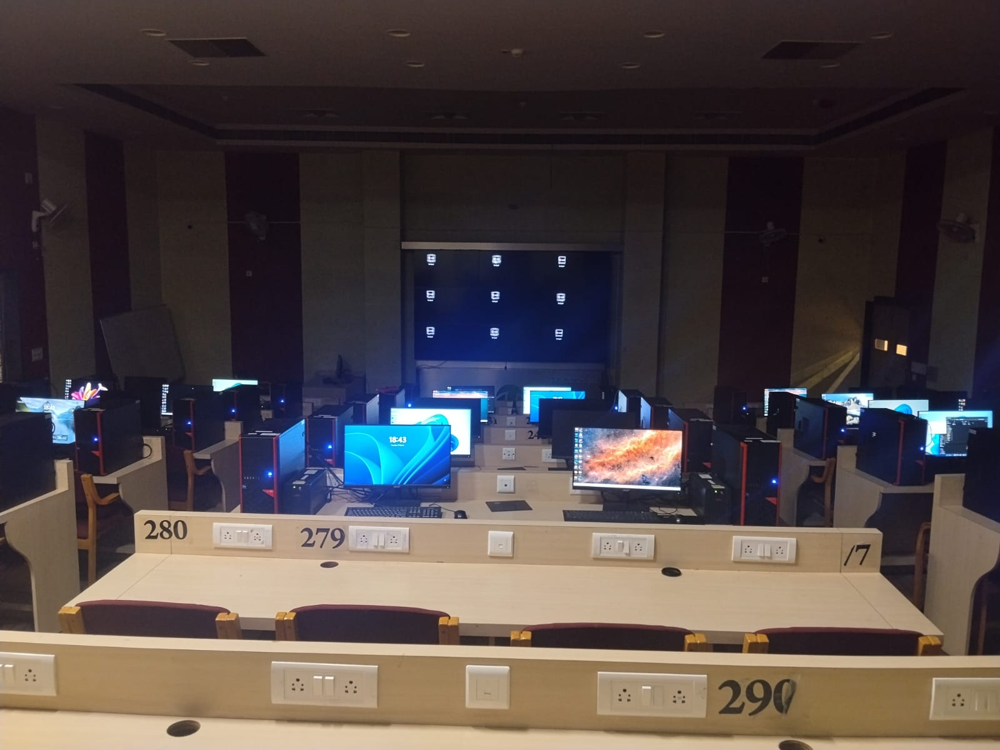
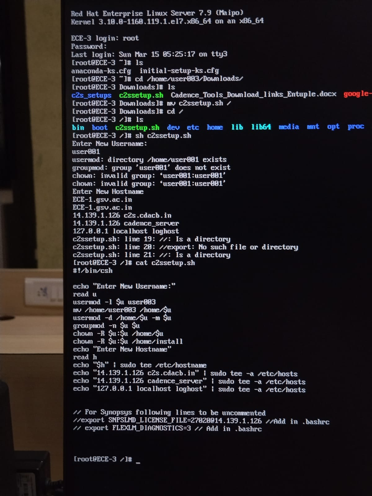
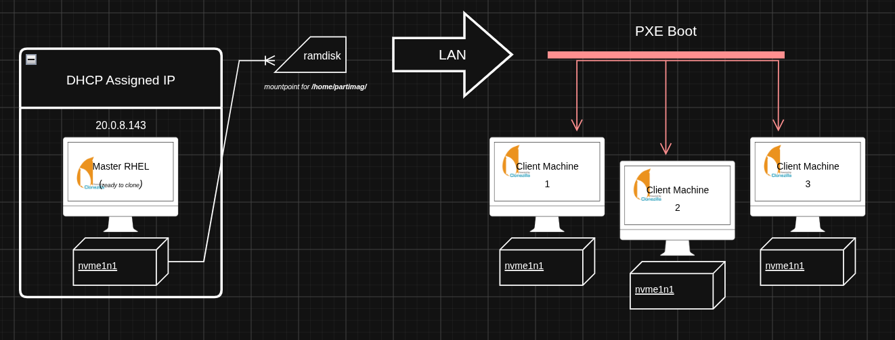

RHEL Workstation Deployment, Cadence EDA Environment Setup & Large-Scale Clonezilla Replication
Overview
During my summer internship 2026, I worked on preparing a Linux-based semiconductor design laboratory for a chip-design workshop. The lab consisted of more than 30 workstations that needed a consistent Red Hat Enterprise Linux environment capable of running a Cadence EDA toolchain for Verilog and RTL-oriented workflows.

The work quickly became a systems deployment problem rather than a simple software installation task. Each workstation needed the operating system, dependencies, Cadence tools, shell environment, network identity, users, groups, permissions, and supporting configuration files to behave consistently. The first phase focused on building a correct workstation; the second phase focused on reproducing that validated workstation reliably across the laboratory.
System Architecture
The architecture evolved over time. Initially, the work centered on one workstation at a time: install RHEL, configure the OS, install Cadence components, establish the shell environment, validate tool execution, and document the result. Once a known-good system existed, that workstation became the reference machine for the larger deployment workflow.

In the replication phase, the reference workstation provided the complete source state: RHEL, filesystem layout, Cadence installation, users, groups, permissions, environment files, and network-related configuration. A Clonezilla deployment server provided the PXE boot environment and Clonezilla Live Lite workflow. Target machines booted over the network as PXE clients, entered the Clonezilla environment, and were intended to receive a disk-level deployment through multicast or raw/device-oriented restoration.
- Reference workstation: the validated source system containing the complete RHEL and Cadence environment.
- Deployment server: the Clonezilla Live Lite and PXE orchestration point responsible for distributing client instructions and the restoration workflow.
- PXE clients: target workstations that boot into Clonezilla, identify their local storage device, and participate in the deployment.
Workstation & Software Environment
The workstation build began with RHEL installation and system preparation. That included installing required dependencies and libraries, configuring the operating system for the laboratory environment, and verifying that the machines could support the EDA stack rather than only completing the base OS install.
The Cadence environment included GENUS, INCISIVE, FOUNDRY, and ASSURA. The setup required more than placing binaries on disk: executable paths, environment variables, library paths, supporting configuration files, and shell initialization had to be arranged so users could invoke the tools consistently. Files such as .cshrc were part of the user environment, while system files such as /etc/hosts supported hostname and network identity requirements.
User, group, UID, GID, ownership, and permission behavior also mattered. Some account and group changes had filesystem implications because Linux permissions are tied to numeric identities, not just displayed usernames. A username or GID change could leave files inaccessible or apparently owned by a different account unless ownership and group membership were kept consistent with the intended laboratory configuration.
Deployment & Automation
After the manual workstation build had been configured, tested, and documented, it became clear that repeating the same process across more than 30 machines would not scale well. The validated reference workstation changed the problem: instead of asking how to install every component again, the goal became how to reproduce the complete known-good system state.
I moved into a Clonezilla-based deployment workflow using PXE netboot and Clonezilla Live Lite. The intended deployment was network-driven: target workstations boot into Clonezilla over the network, receive client-side instructions, and restore the reference system at disk level. This approach is meant to preserve the operating system, filesystem, installed Cadence environment, users, permissions, configuration files, and other machine state rather than reinstalling individual packages by hand.

Scale shaped the design. Clonezilla massive deployment and multicast were investigated so multiple machines could receive the same source stream instead of transferring a full independent copy of the workstation state to each target. I also investigated raw/device-oriented deployment, including Clonezilla's raw-psdo pseudo-device representation, client-side ocs-sr, and the distinction between restoring from an image repository and restoring from a device-oriented source.
- Manual RHEL and Cadence setup produced the validated reference workstation.
- Clonezilla Live Lite and PXE shifted the process from local installation to network boot and orchestration.
- Massive deployment and multicast addressed the need to distribute one workstation state across many machines.
- Raw/device-oriented restoration focused on reproducing the source disk state, not just copying application files.
Challenges
The first phase required troubleshooting missing dependencies, library compatibility, executable paths, shell environment problems, filesystem permissions, configuration differences between machines, and Cadence tool invocation failures. The issues were rarely isolated to one package; they came from the interaction between RHEL, the filesystem, shell initialization, users, groups, networking, and the EDA toolchain.
The Clonezilla phase exposed a different class of problems. Some target machines rejected the PXE boot image due to firmware Secure Boot or authentication configuration, so deployment reliability depended partly on client firmware state. Once clients entered Clonezilla, failures around ocs-client-run.conf showed that the problem was not only disk restoration; the Live Lite orchestration layer also had to generate and deliver the correct client-side instructions.
Block-device naming became a major debugging point. Clonezilla-generated commands assumed a target such as sda, while target machines exposed NVMe storage as /dev/nvme0n1 or /dev/nvme1n1. Simply replacing sda in a server-side command was not enough, because the server and client have different device namespaces. A disk visible inside the PXE-booted client environment is not necessarily visible to the deployment server.
The investigation included commands and modes such as restoredisk, multicast_restoredisk, from-device, from-image, raw-psdo, and client-side ocs-sr. A representative generated operation had the shape:
ocs-sr ... multicast_restoredisk "raw-psdo-..." sdaThat command helped separate the source representation, multicast restoration mode, server orchestration, and target disk selection. To isolate failure domains, I planned direct client-side testing from a Clonezilla TTY so the restoration command could be evaluated independently of the automatic PXE command-generation path.
Results
The project has progressed from manual workstation configuration to a network-based deployment architecture. A standardized RHEL workstation environment was built around the Cadence toolchain, with supporting configuration for dependencies, shell initialization, networking, users, groups, permissions, and filesystem ownership.
The replication phase is still being developed and debugged. Clonezilla Live Lite, PXE boot, massive deployment, multicast, raw/device-oriented restoration, raw-psdo, ocs-client-run.conf, and target block-device identification have been investigated as parts of the deployment pipeline. The current value of the work is not a fabricated claim that all machines have already been deployed; it is the movement from a validated reference workstation toward a reproducible deployment process, with the remaining technical problems isolated into firmware boot, orchestration, source representation, multicast behavior, and client-side storage identification.
What I Learned
This project taught me to think about Linux workstations as complete systems rather than collections of installed packages. Reproducibility depended on OS configuration, shell startup files, executable paths, library dependencies, user identities, group membership, ownership, permissions, hostnames, and network configuration all matching the expected workflow.
The Clonezilla phase added another layer: PXE booting, client/server orchestration, multicast distribution, disk-level deployment, block-device naming, and the difference between server and client device namespaces. The main engineering lesson was to debug layered systems by separating failure domains: firmware boot, network boot, client configuration delivery, restoration command construction, source-device representation, and target-disk resolution.
I also learned that documentation can be part of the deployment infrastructure. The technical manual grew beyond a short internship report because the system needed a reproducible reference for RHEL installation, Cadence setup, environment configuration, permission management, troubleshooting, and the transition toward Clonezilla-based replication.